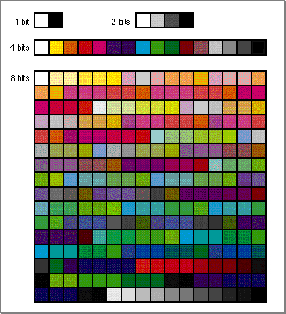

How the Palette Manager Restores the Color Environment
When a window closes, the Palette Manager resets each display device to the default color table for that depth, except for those indexes still reserved by another application. (Eventually, the application that owns those indexes will terminate or voluntarily release the indexes.) You can run a long sequence of wildly animated color-stealing programs, quit them all, return to the Finder, and find every screen fully restocked with default system color tables. (But if an application calls the Color Manager functionProtectEntryto lock a device index, the Palette Manager cannot restore the default color tables.)The Palette Manager provides default color tables for differing screen devices:
Screen device Default color table Any device in gray mode or 1 bit deep A grayscale ramp; that is, an evenly spaced range from white in index 0 to black in the last index (only white and black in 1-bit mode). A color device in 2-bit mode Indexes 0 to 3 contain white, 50 percent gray, the highlight color, and black, respectively. A color device in 4-bit mode The 'clut'system resource with a resource ID of 4. It could be in the system file or stored in ROM. If the color closest to the highlight color differs from it by more than $3000 in any component, the color is averaged with the highlight color.A color device in 8-bit mode The 'clut'system resource with a resource ID of 8. It could be in the system file or stored in ROM.The
'clut'resource IDs 1, 2, 4, and 8 are the standard color lookup tables for those bit depths; they are shown in Figure 1-1.The
'clut'resource IDs 34, 36, and 40--the bit depth plus 32--are grayscale ramps for bit depths of 2, 4, and 8.The default color lookup tables with the highlight color added are
'clut'resource IDs 66, 68, and 72--that is, the bit depth plus 64. To get these color lookup tables, use theGetCTablefunction (notGetResource), as described in the chapter "Color QuickDraw" of Inside Macintosh: Imaging With QuickDraw.Figure 1-1 The colors of the default color tables
